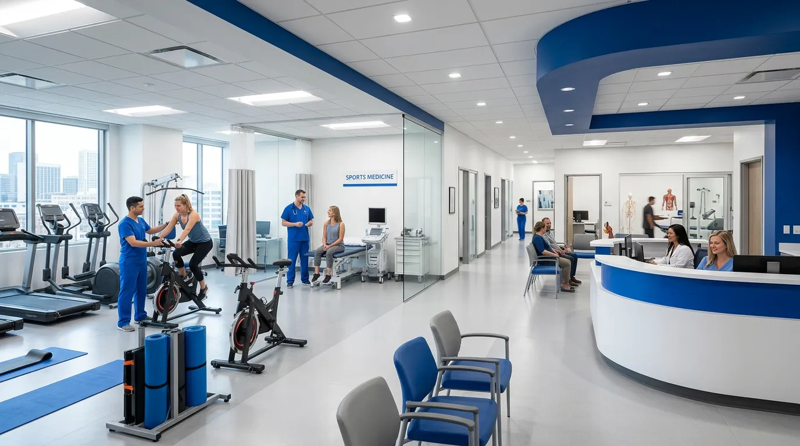
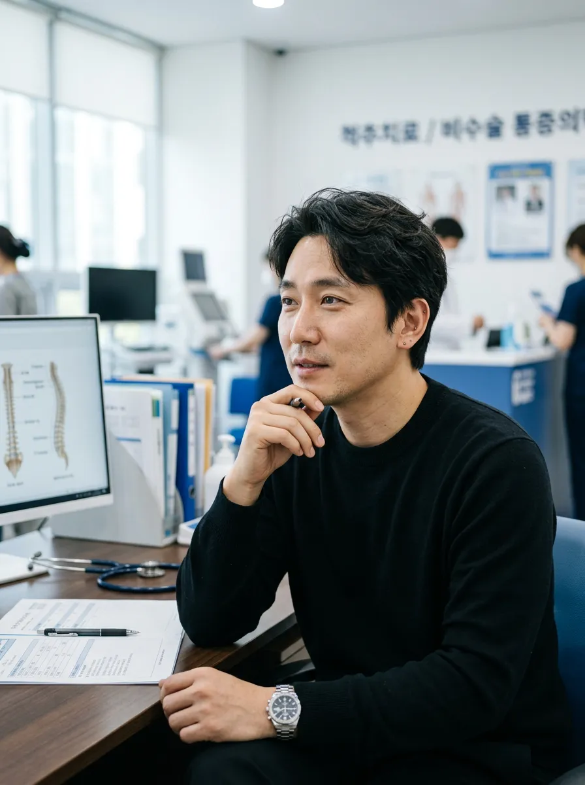
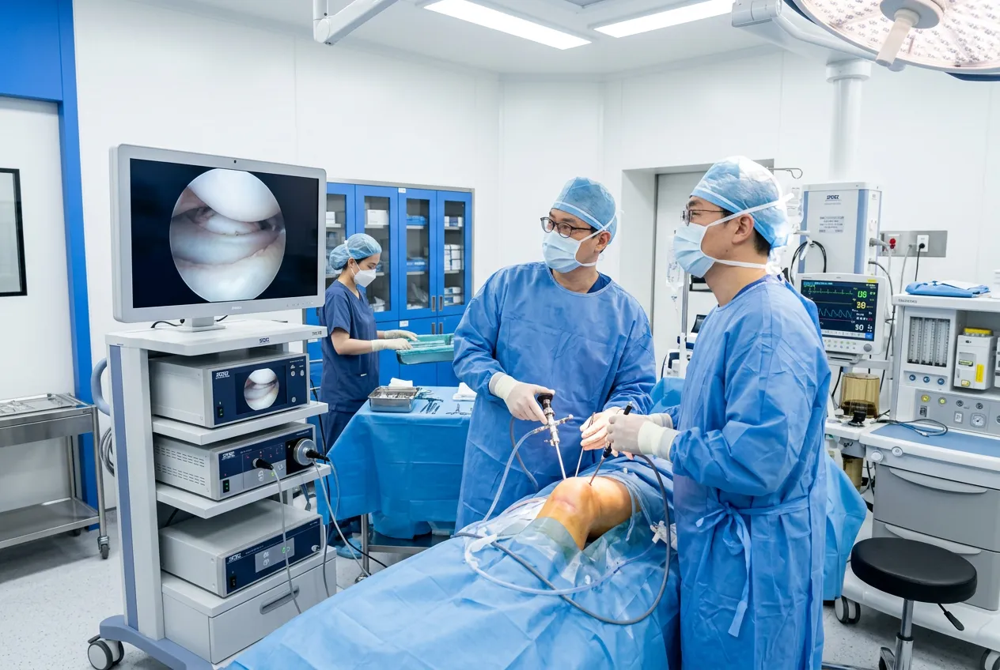
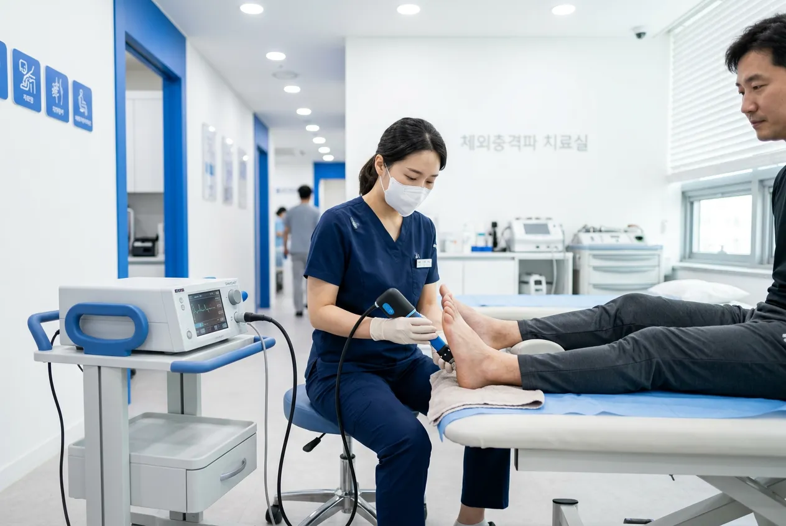
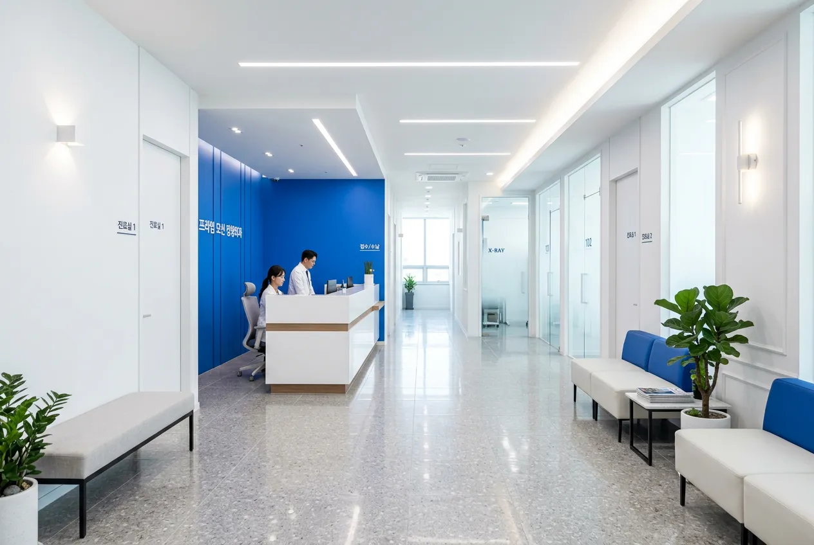
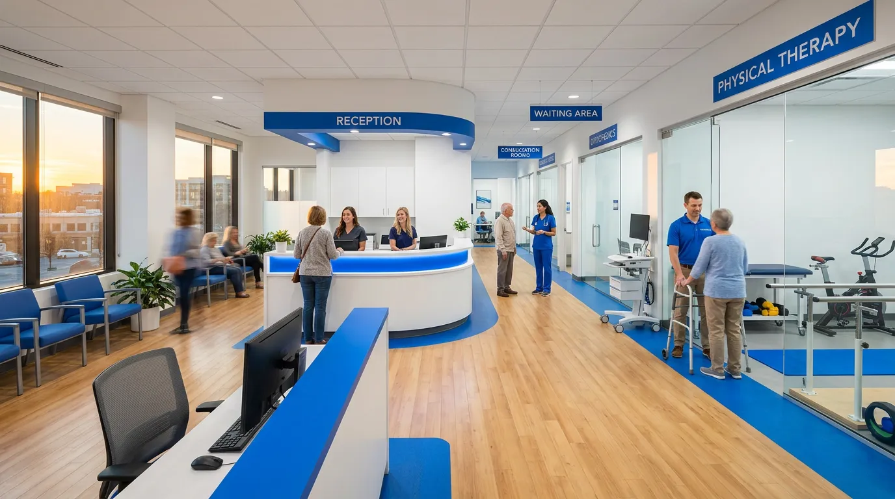

OUR PHILOSOPHY
환자의 일상으로
돌아가는 그 순간까지
수술만이 답이 아닙니다. 비수술 치료부터
수술 후 재활까지, 프라임 모션은
회복의 전 과정을 설계합니다.
SPECIALTIES
전문 진료 분야
스포츠의학
선수와 일반인 모두를 위한
운동 손상 전문 치료
관절 수술
최소 절개 관절경 수술로
빠른 일상 복귀
척추 치료
비수술 척추 치료부터
미세현미경 수술까지
체외충격파
비침습적 통증 치료로
조직 재생 촉진
MEDICAL TEAM
당신의 회복을 이끌
전문 의료진
스포츠의학 / 관절 수술
서울대학교 의과대학 졸업
서울아산병원 정형외과 전문의
김성훈 원장
대한정형외과학회 정회원

척추 치료 / 비수술 통증의학
연세대학교 의과대학 졸업
세브란스병원 척추센터 펠로우
박지연 원장
대한척추신경외과학회 정회원
재활의학 / 체외충격파
고려대학교 의과대학 졸업
삼성서울병원 재활의학과 전문의
이준호 원장
대한재활의학회 정회원
EQUIPMENT
정밀 진단을 위한
첨단 장비
3.0T MRI, 관절경 수술 시스템, 체외충격파 치료기 등
최신 의료 장비를 갖추고 있습니다.
3.0T MRI
초고해상도 자기공명영상으로
미세 병변까지 정밀 진단

관절경 수술 시스템
최소 절개로 관절 내부를 직접 확인하며 수술하는
4K HD 관절경 시스템을 운용합니다.

체외충격파 치료기
통증 부위에 집중 충격파를 전달하여
손상 조직의 자연 치유를 촉진
PROCESS
첫 상담부터 완전한 회복까지
온라인 예약
웹사이트 또는 전화로 편리하게
원하시는 날짜와 시간을 선택하세요.
전문의 상담
담당 전문의가 증상을 청취하고
초기 평가를 진행합니다.
정밀 검사
3.0T MRI, 디지털 X-ray 등
첨단 장비로 정확한 진단을 내립니다.
맞춤 치료
비수술/수술 치료를 환자 상태에 맞게
최적의 치료 계획을 수립합니다.
사후 관리
재활 프로그램과 정기 검진으로
완전한 일상 복귀까지 함께합니다.
STORIES
일상으로 돌아온
환자들의 이야기
"축구 중 십자인대를 다쳐서 수술이 필요했는데, 김성훈 원장님 덕분에 6개월 만에 다시 필드에 설 수 있었습니다. 재활 프로그램이 정말 체계적이었어요."
이** · 30대 · 전방십자인대 재건술
"허리디스크로 오래 고생했는데, 박지연 원장님의 비수술 치료로 수술 없이 일상생활이 가능해졌습니다. 친절한 설명과 꼼꼼한 사후 관리에 감사드립니다."
김** · 50대 · 요추 추간판탈출증
"어깨 회전근개 파열로 팔을 들 수 없었는데, 관절경 수술 후 3개월 만에 골프를 다시 칠 수 있게 되었습니다. 최소 절개라 회복이 정말 빨랐어요."
박** · 40대 · 회전근개 봉합술
"마라톤 준비 중 족저근막염이 심해져서 체외충격파 치료를 받았습니다. 3주 만에 통증이 확 줄었고, 이준호 원장님의 스트레칭 가이드 덕에 재발도 없었어요."
최** · 30대 · 체외충격파 치료
네, MRI 촬영, 관절경 수술, 물리치료 등 대부분의 진료 항목에 건강보험이 적용됩니다. 체외충격파 치료 등 일부 비급여 항목은 사전 안내해 드립니다.
수술 부위와 범위에 따라 다르지만, 일반적으로 2-4주 후 일상생활이 가능하며 본격적인 운동 복귀는 3-6개월 정도 소요됩니다. 개인별 재활 프로그램을 통해 최적의 회복을 돕습니다.
프라임타워 지하 주차장을 이용하실 수 있으며, 진료 환자분께는 2시간 무료 주차를 제공합니다. 수술 당일에는 3시간까지 무료입니다.
진료 시간 내 급성 외상, 골절 등 응급 상황 시 예약 없이 내원 가능합니다. 가능하면 전화(02-555-9900)로 사전 연락해 주시면 더 빠른 진료가 가능합니다.
신분증과 건강보험증을 지참해 주세요. 타 병원에서 촬영한 영상 자료(CD)가 있으시면 함께 가져오시면 진단에 큰 도움이 됩니다.
LOCATION
오시는 길
주소
서울 강남구 테헤란로 178
프라임타워 10-11F
전화
02-555-9900진료 시간
평일 09:00 – 19:00
토요일 09:00 – 14:00
일요일·공휴일 휴진
교통
2호선 역삼역 3번 출구 도보 5분
분당선 선릉역 1번 출구 도보 8분

